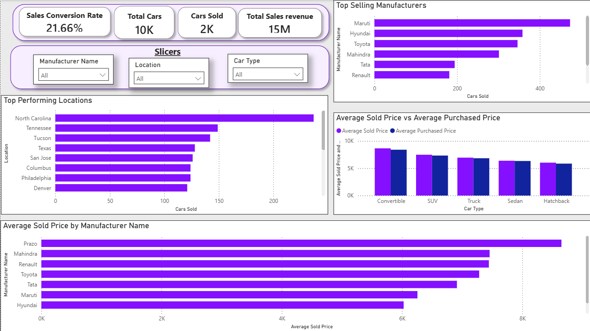
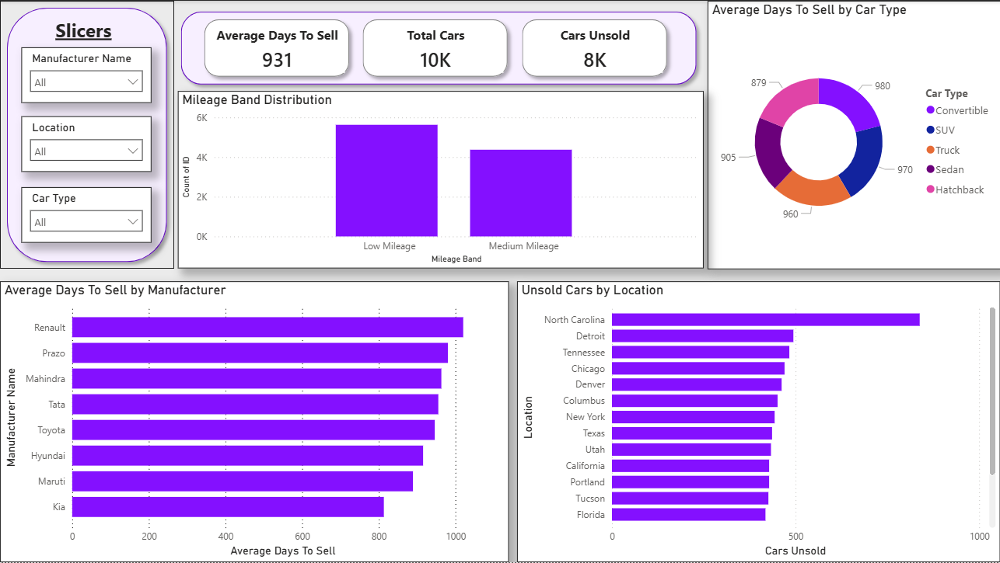
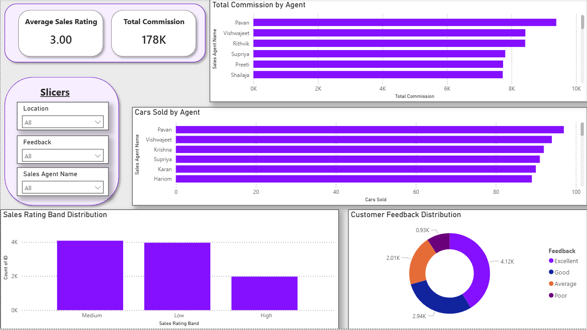

Used Car Sales Performance Analytics Dashboard
Power BI dashboard analyzing used vehicle sales, inventory efficiency, customer feedback, and sales performance trends
This project analyzes used car sales performance at AutoNation Global using Power BI. The dashboard evaluates vehicle sales trends, inventory movement, customer feedback, sales agent performance, and location-level sales efficiency. The goal was to transform a single sales dataset into an executive-ready analytics dashboard that supports operational decision-making and identifies opportunities to improve inventory management, sales outcomes, and customer experience.
🎯 The Challenge
Used car sales data can reveal important patterns around inventory movement, sales performance, customer satisfaction, and profitability. However, without a structured reporting view, it can be difficult to identify which manufacturers, vehicle types, sales agents, and locations are driving performance. This project focused on building an interactive Power BI dashboard to summarize performance trends, highlight unsold inventory, and support data-driven business recommendations.
🛠️ The Process
- Cleaned and transformed used car sales data in Power BI using Power Query.
- Created calculated fields and DAX measures for sales, inventory, profitability, commission, and efficiency analysis.
- Segmented vehicles by manufacturer, car type, location, mileage band, sales rating band, and sale status.
- Built interactive slicers to allow filtering by manufacturer, location, car type, sales agent, and feedback category.
- Designed executive-ready visuals to identify sales trends, unsold inventory concentrations, and performance opportunities.
📊 Dashboard Overview
The dashboard provides a business-facing view of used car sales performance by combining sales KPIs, inventory analysis, customer feedback, and agent productivity metrics. It was designed to help leaders quickly understand where sales are strongest, where inventory may be moving more slowly, and where performance improvement opportunities exist.

Executive-facing used car sales performance dashboard
Executive Takeaways
- Maruti, Hyundai, and Toyota appeared to have some of the highest sales volume compared to other brands.
- Hatchbacks and SUVs were among the most frequently sold vehicle types.
- Some locations showed higher concentrations of unsold inventory.
- Customer feedback was generally positive, with Excellent and Good ratings making up the largest share of responses.
- Sales agent performance varied, showing opportunities to share best practices across the broader sales team.
📈 Sales & Inventory Analysis
This portion of the analysis focuses on understanding which manufacturers, car types, and locations contributed most to sales activity. It also highlights where unsold vehicles were concentrated and where longer sales cycles may create inventory efficiency concerns.

Sales volume and inventory efficiency analysis
Key Insights
- Sales volume varied across manufacturers and vehicle categories.
- Some locations appeared to hold more unsold inventory than others.
- Average days to sell helped identify slower-moving vehicle segments.
- Inventory patterns suggested opportunities for pricing, marketing, or location-level strategy adjustments.
⭐ Customer Feedback & Agent Performance
This analysis also evaluates customer feedback and sales agent productivity. By comparing ratings, commission totals, and vehicle sales activity, the dashboard helps identify both strong performance areas and opportunities for additional coaching or process improvement.

Customer feedback and sales agent performance view
Key Insights
- Customer feedback was generally positive across the dataset.
- Some sales agents consistently sold more vehicles and generated higher commission totals.
- Differences in sales agent performance may indicate opportunities for training or best-practice sharing.
- Feedback trends can help leadership monitor the customer experience alongside sales outcomes.
🧮 KPI Design
I created custom measures to summarize key business performance indicators and make the dashboard easier to interpret for decision-makers.
- Total Cars
- Cars Sold
- Cars Unsold
- Sales Conversion Rate
- Total Sales Revenue
- Average Sold Price
- Average Sales Rating
- Total Commission
- Average Commission
- Average Days to Sell
✅ Recommended Actions
- Focus inventory reduction efforts on locations with the highest number of unsold vehicles.
- Review slower-moving manufacturers and vehicle types for pricing or marketing opportunities.
- Share best practices from top-performing sales agents with the broader sales team.
- Continue monitoring customer feedback to maintain positive buying experiences.
- Use sales and inventory reporting regularly to identify bottlenecks before they become larger business issues.
🧰 Tools Used
- Power BI
- DAX
- Power Query
- Excel / CSV Data
- Data Cleaning & Validation
- Business Intelligence Reporting
🔮 What I’d Do Next
Future enhancements could include adding predictive inventory risk scoring, deeper profitability analysis, automated refresh pipelines, regional benchmarking, and more detailed drill-through views for vehicle-level, location-level, and sales agent-level performance.